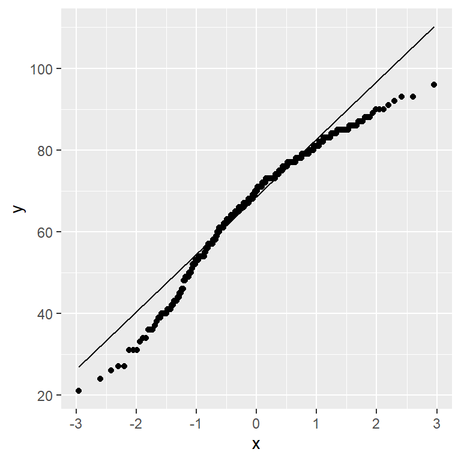

pacman::p_load(tidyverse, rstatix, gt, patchwork)In-Class Exercise 04
1. Getting Started
1.1. Installing and Loading the required R Packages
In this exercise using Exam_data, we will be using tidyverse, rstatix, gt and patchwork.
1.2. Importing Data (Exam_data)
exam_data <- read_csv("data/Exam_data.csv")1.3. Visualising Normal Distribution
A Q-Q plot (Quantile-Quantile plot) is used to assess whether a set of data points are normally distributed.
if the data is normally distrbuted, the points in a Q-Q plot will lie on a straight diagonal line. Conversely, if the points deviate significantly from the straight diagonal line, then it’s less likely that the data is normally distributed.

ggplot(exam_data,
aes(sample=ENGLISH)) +
stat_qq() +
stat_qq_line()
Note
We can see that the points deviate significantly form the straight diagnoal line. This is a clear indication that the set of data is not normally distributed.
1.4. Runnig Shapiron Test
png, webshot2 packages will be required to run the following codes.

qq <- ggplot(exam_data,
aes(sample=ENGLISH)) +
stat_qq() +
stat_qq_line()
# running shapiro test and save into gt() format
sw_t <- exam_data %>%
shapiro_test(ENGLISH) %>%
gt()
# converting the sw_t into an image file (png)
tmp <- tempfile(fileext = '.png')
gtsave(sw_t, tmp)
table_png <- png::readPNG(tmp,
native = TRUE)
qq + table_png